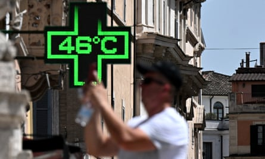
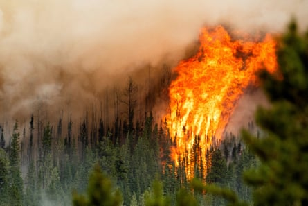
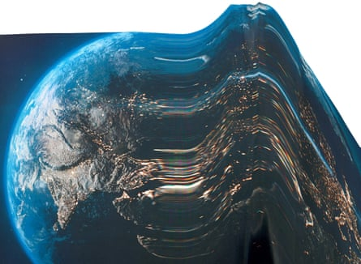

Composite: Jesse Winter / Guardian Design
Climate breakdown can be observed across many continuous, incremental changes such as soaring carbon dioxide levels, rising seas and heating oceans. The numbers creep up year after year, fuelled by human-caused greenhouse gas emissions.
But scientists have also identified at least 16 “tipping points” – thresholds where a tiny shift could cause fundamental parts of the Earth system to change dramatically, irreversibly and with potentially devastating effects. These shifts can interact with each other and create feedback loops that heat the planet further or disrupt weather patterns, with unknown but potentially catastrophic consequences for life on Earth. It is possible some tipping points may already have been passed.
Dr Genevieve Guenther, an American climate communications specialist, is the founding director of End Climate Silence, which studies the representation of global heating in the media and public discourse. Last year, she published The Language of Climate Politics: Fossil Fuel Propaganda and How to Fight It, which was described by Bill McKibben as “a gift to the world”. In the run-up to the Global Tipping Points conference in July, Guenther talks to the Guardian about the need to discuss catastrophic risks when communicating about the climate crisis.
The future of her son and all children motivates Dr Genevieve Guenther to protect the planet from further global heating.Photograph: Laila Annmarie Stevens/The Guardian
The climate crisis is pushing globally important ecosystems – ice sheets, coral reefs, ocean circulation and the Amazon rainforest – towards the point of no return. Why is it important to talk about tipping points? We need to correct a false narrative that the climate threat is under control. These enormous risks are potentially catastrophic. They would undo the connections between human and ecological systems that form the basis of all of our civilisation.
How have attitudes changed towards these dangers? There was a constructive wave of global climate alarm in the wake of the Intergovernmental Panel on Climate Change (IPCC) report on 1.5C in 2018. That was the first time scientists made it clear that the difference between 1.5C and 2C would be catastrophic for millions of people and that in order to halt global heating at a relatively safe level, we would need to start zeroing out our emissions almost immediately. Until then, I don’t think policymakers realised the timeline was that short. This prompted a flurry of activism – Greta Thunberg and Indigenous and youth activists – and a surge of media attention. All of this converged to make almost everybody feel that climate change was a terrifying and pressing problem. This prompted new pledges, new corporate sustainability targets, and new policies being passed by government.
This led to a backlash by those in the climate movement who prefer to cultivate optimism. Their preferred solution was to drive capitalist investment into renewable technologies so fossil fuels could be beaten out of the marketplace. This group believed climate fear might drive away investors, so they started to argue it was counterproductive to talk about worst-case scenarios. Some commentators even argued we had averted the direst predictions and were now on a more reassuring trajectory of global warming of a little under 3C by 2100.
There is a misconception that wealthier places, such as the UK, Europe (including Italy, pictured) and the US will not be affected by the climate crisis but this is wrong, says Guenther.Photograph: Tiziana Fabi/AFP/Getty Images
But it is bananas to feel reassured by that because 3C would be a totally catastrophic outcome for humanity. Even at the current level of about 1.5C, the impacts of warming are emerging on the worst side of the range of possible outcomes and there is growing concern of tipping points for the main Atlantic Ocean circulation (Amoc), Antarctic sea ice, corals and rainforests.
If the risk of a plane crashing was as high as the risk of the Amoc collapsing , none of us would ever fly because they would not let the plane take off. And the idea that our little spaceship, our planet, is under the risk of essentially crashing and we’re still continuing business as usual is mindblowing. I think part of the problem is that people feel distant from the dangers and don’t realise the children we have in our homes today are threatened with a chaotic, disastrous, unliveable future. Talking about the risks of catastrophe is a very useful way to overcome this kind of false distance.
In your book, you write that it’s appropriate to be scared and the more you know, the more likely you are to be worried, as is evident from the statements of scientists and the United Nations secretary general, Ant ónio Guterres . Why? Some people at the centre of the media, policymaking and even research claim that climate change isn’t going to be that bad for those who live in the wealthy developed world – the UK, Europe and the United States. When you hear these messages, you are lulled into a kind of complacency and it seems reasonable to think that we can continue to live as we do now without putting ourselves, our families, our communities under threat within decades. What my book is designed to do is wake people up and raise the salience and support for phasing out fossil fuels.
[It] is written for people who are already concerned about the climate crisis and are willing to entertain a level of anxiety. But the discourse of catastrophe would not be something I would recommend for people who are disengaged from the climate problem. I think that talking about catastrophe with those people can actually backfire because it’ll just either overwhelm them or make them entrench their positions. It can be too threatening.
The Donnie Creek wildfire burns in British Columbia, Canada, in 2023.Photograph: Noah Berger/AP
A recent Yale study found that a degree of climate anxiety was not necessarily bad because it could stir people to collective action. Do you agree? It depends. I talk about three different kinds of doomerism. One is the despair that arises from misunderstanding the science and thinking we’re absolutely on the path to collapse within 20 or 30 years, no matter what we do. That is not true.
Second, there’s a kind of nihilistic position taken by people who suggest they are the only ones who can look at the harsh truth. I have disdain for that position.
Finally, there’s the doomerism that comes from political frustration, from believing that people who have power are just happy to burn the world down. And that to me is the most reasonable kind of doomerism. To address that kind of doomerism, you need to say: “Yes, this is scary as hell. But we must have courage and turn our fear into action by talking about climate change with others, by calling our elected officials on a regular basis, by demanding our workplaces put their money where their mouth is.”
You need to acknowledge people’s feelings, meet them where they are and show how they can assuage their fear by cultivating their bravery and collective action.
The most eye-opening part of your book was about the assumptions of the Nobel prize winner William Nordhaus that we’ll probably only face a very low percentage of GDP loss by the end of the century. This surely depends on ignoring tipping points? The only way Nordhaus can get the result that he does is if he fails to price the risk of catastrophe and leaves out a goodly chunk of the costs of global heating. In his models, he does not account for climate damages to labour productivity, buildings, infrastructure, transportation, non-coastal real estate, insurance, communication, government services and other sectors. But the most shocking thing he leaves out of his models is the risk that global heating could set off catastrophes, whether they are physical tipping points or wars from societal responses. That is why the percentage of global damages that he estimates is so ridiculously lowballed.
The idea that climate change will just take off only a small margin of economic growth is not founded on anything empirical. It’s just a kind of quasi-religious faith in the power of capitalism to decouple itself from the planet on which it exists. That’s absurd and it’s unscientific.
Some economists suggest wealth can provide almost unlimited protection from catastrophe because it is better to be in a steel and concrete building in a storm than it is to be in a wooden shack. How true is that? There’s no evidence that these protections are unlimited, though there are economists who suggest we can always substitute technologies or human-made products for ecosystems or even other planets like Mars for Earth itself. This goes back to an economic growth theorist named Robert Solow, who claims technological innovation can increase human productivity indefinitely. He stressed that it was just a theory, but the economists advising Ronald Reagan and Margaret Thatcher in the 1980s took this as gospel and argued it was possible to ignore environmental externalities – the costs of our economic system, including our greenhouse gas pollution – because you could protect yourself as long as you kept increasing your wealth.
Floods due to heavy rains at Porto Alegre airport left a plane stranded on the runway in Rio Grande do Sul, Brazil, last year.Photograph: Diego Vara/Reuters
Except when it comes to the climate crisis? Yes, the whole spectacle of our planet heating up this quickly should call all of those economic assumptions into question. But because climate change is affecting the poor first and worst, this is used as evidence that poverty is the problem. This is a misrepresentation of reality because the poor are not the only ones who are affected by the climate crisis. This is a slow-moving but accelerating crisis that will root and spread. And it could change for the worst quite dramatically as we hit tipping points.
The difference between gradual warming and tipping points is similar to the difference between chronic, manageable ailments and acute, life-threatening diseases, isn’t it? Yes. When people downplay the effects of climate change, they often represent the problem as a case of planetary diabetes – as if it were a kind of illness that you can bumble along with, but still have a relatively good quality of life as long as you use your technologies, your insulin, whatever, to sustain your health. But this is not how climate scientists represent climate change. Dr Joelle Gergis, one of the lead authors on the latest IPCC report, prefers to represent climate change as a cancer – a disease that takes hold and grows and metastasises until the day when it is no longer curable and becomes terminal. You could also think of that as a tipping point.
This is a fight for life. And like all fights, you need a tremendous amount of bravery to take it on. Before I started working on climate change, I didn’t think of myself as a fighter, but I became one because I felt I have a responsibility to preserve the world for my son and children everywhere. That kind of fierce protectiveness is part of the way that I love. We can draw on that to have more strength than our enemies because I don’t think they’re motivated by love. I believe love is an infinite resource and the power of it is greater than that of greed or hate. If it weren’t, we wouldn’t be here.
Tipping points: on the edge? – a series on our future
Composite: Getty/Guardian Design
Tipping points – in the Amazon, Antarctic, coral reefs and more – could cause fundamental parts of the Earth system to change dramatically, irreversibly and with devastating effects. In this series, we ask the experts about the latest science – and how it makes them feel. Tomorrow, David Obura talks about the collapse of coral reefs
Read more